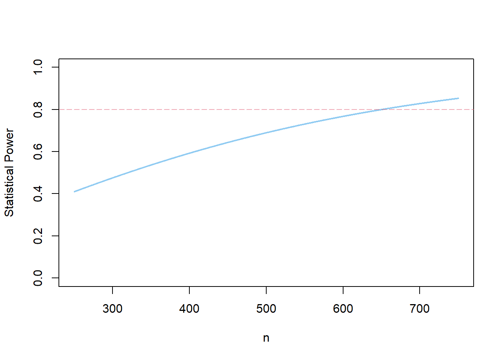
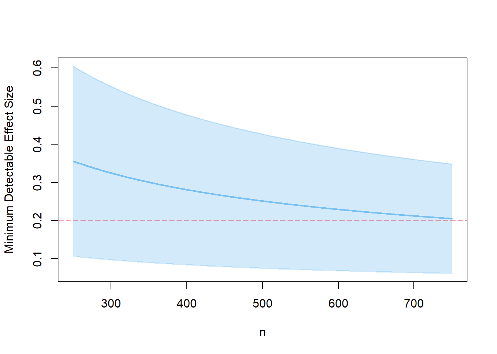

library(PowerUpR)
library(tidyverse)Single-Level Designs
Individually Randomized Trials (IRTs)
In an individually randomized trial (IRT), individual students are sampled independently of each other and are randomly assigned to the experimental groups, disregarding any potential classroom or school affiliation; likewise, the treatment and control protocols are delivered at a completely individual basis.
Illustration of the Worked Example
As a first step, the researchers aim to test the general efficacy of the underlying didactic approach. To this end, they plan a small-scale pilot IRT with elementary school students.
Scenario 1: Determining Statistical Power
How much power is achieved to detect a certain hypothesized treatment effect, given a specified number of students?
The research team considers a standardized treatment effect of d = .22 as meaningful, because it represents around one quarter of the expected annual growth in students’ achievement across elementary school for the German student population (Brunner et al., 2023, Table 1). The team wonders how much power can be achieved when sampling and randomizing N = 300 students in total to detect MDES = .22 at significance level α = .05 in a two-tailed t-test with power 1−β = .80. The researchers assume a balanced design, where students are allocated to the treatment group (TG) and control group (CG) in equal shares (i.e., nTG = nCG).
Formula
The expressions to compute statistical power for IRTs (and also for multilevel RT designs) involve the cumulative distribution function of the noncentral t-distribution and are given in OSM C in Stallasch et al. (2023), and also in Hedges & Hedberg (2007) and Liu (2013).
Power Analysis with PowerUpR
The R code looks like this:
power.ira(
# properties of the statistical test
alpha=.05, two.tailed=TRUE,
# sample size and sample allocation ratio
n=300, p=.50,
# hypothesized effect size
es=.22,
# possibly applied covariates
g1=0, r21=0
)with
| Parameter | Definition | PowerUpR argument |
|---|---|---|
| \(M_{n-g^*-2}\) | multiplier for a two-tailed test \(t_{\alpha/2}+t_{1-\beta}\) with \(n-g^*-2\) degrees of freedom | power=.80, alpha=.05,two.tailed=TRUE |
| \(MDES\) | minimum detectable effect size | es=.25 |
| \(n\) | mean number of students | n |
| \(P\) | proportion of sample assigned to treatment \(n_{TG}/N\) | p=.50 |
| \(g^*\) | number of covariates | g1=0 |
| \(R^2\) | explained variance by covariates | r21=0 |
The output looks like this:1
Statistical power:
---------------------------------------
0.476
---------------------------------------
Degrees of freedom: 298
Standardized standard error: 0.115
Type I error rate: 0.05
Type II error rate: 0.524
Two-tailed test: TRUEThe achieved power level is well below an acceptable threshold for this design.
As we learned before, power increases with…
increasing Type I error rate (or, using a one-sided instead of a two-sided test)
increasing sample size
increasing effect size
Let’s adjust some of the arguments and see, what happens.
Set the alpha argument to .10.
power.ira(alpha=.10, two.tailed=TRUE, n=300, p=.50, es=.22)
Statistical power:
---------------------------------------
0.601
---------------------------------------
Degrees of freedom: 298
Standardized standard error: 0.115
Type I error rate: 0.1
Type II error rate: 0.399
Two-tailed test: TRUE… this should result in the same power as when setting the two.tailed argument to FALSE.
power.ira(alpha=.05, two.tailed=FALSE, n=300, p=.50, es=.22)
Statistical power:
---------------------------------------
0.601
---------------------------------------
Degrees of freedom: 298
Standardized standard error: 0.115
Type I error rate: 0.05
Type II error rate: 0.399
Two-tailed test: FALSESet the n argument to 600.
power.ira(alpha=.05, two.tailed=TRUE, n=600, p=.50, es=.22)
Statistical power:
---------------------------------------
0.767
---------------------------------------
Degrees of freedom: 598
Standardized standard error: 0.082
Type I error rate: 0.05
Type II error rate: 0.233
Two-tailed test: TRUESet the es argument to .30.
power.ira(alpha=.05, two.tailed=TRUE, n=300, p=.50, es=.30)
Statistical power:
---------------------------------------
0.736
---------------------------------------
Degrees of freedom: 298
Standardized standard error: 0.115
Type I error rate: 0.05
Type II error rate: 0.264
Two-tailed test: TRUEPlotting
PowerUpR comes with built-in plotting functionality. We can create a power curve to see how many students would be necessary to achieve a certain power level.
s1 <- power.ira(alpha=.05, two.tailed=TRUE, n=500, p=.50, es=.22)
plot(s1)
Tip
You may also use ggplot in combination with plotly and htmlwidgets to generate an interactive power curve.
Using ggplot, the power curve looks like this:
show code
# install/load required packages
packages <- c("plotly", "htmlwidgets")
invisible(
lapply(packages,
function(x) {
if (!require(x, character.only = TRUE)) {
install.packages(x, dependencies = TRUE); require(x, character.only = TRUE)}
}
)
)
# write custom function to vectorize power across a range of sample sizes
custom_power.ira <- function(n) {
parms <- list(n=n, es=.22)
design <- exec("power.ira", !!!parms)
design$power[1]
}
# number of students ranging from 10 to 1000
n <- seq(10, 1000, 10)
# map across the sample size vector
pwr <- map_dbl(n, custom_power.ira) |> set_names(n)
# plot power curve
p <- data.frame(n = n, pwr = pwr) %>%
pivot_longer(pwr) %>%
ggplot(aes(x = as.numeric(n), y = value,
text = paste(
"With " , n, " students ",
round(value*100, 0), "% Power is achieved.", sep = ""), group = 1)) +
geom_line() +
geom_hline(yintercept = .8, lty = "dotted") +
scale_y_continuous("Statistical Power", limits = c(0,1), breaks = seq(0, 1, .2)) +
scale_x_continuous("Number of students", limits = c(10, 1000), breaks = seq(50, 1000, 100)) +
theme_minimal() +
theme(axis.ticks = element_blank(),
axis.title.x = element_text(margin = margin(0.25, 0, 0, 0)),
plot.title = element_text(hjust = 0.5),
plot.margin = margin(0,0.25,1,0.25, unit = "cm")) +
ggtitle("Statistical Power as a Function of the Number of Students")
ggplotly(p, tooltip = "text")Note that you can move your cursor across the line to learn about the exact level of statistical power.
Your turn!
Scenario 2: Finding the Minimum Required Sample Size
How many students are required to adequately power an IRT to detect a certain hypothesized effect?
To find the MRSS, use the mrss.ira() function.
Note
In the PowerUpR Documentation you will find the following default code:
mrss.ira(es=.25, power=.80, alpha=.05, two.tailed=TRUE, n0=10, tol=.10, p=.50, g1=0, r21=0)
Note that the arguments n0 and tol are used to set the starting value and the tolerance in the iterative process to determine the MRSS. Here, you can keep the default values. Note further that, for the moment, you can ignore the covariate arguments g1 and r21.
- Calculate the number of students needed for an IRT to detect MDES = .22 in a two-tailed test with 5% Type I error rate and 80% power, when the design is balanced (i.e., the exact MRSS for our worked example).
All else being constant, what happens when…
increasing power from 80% to 90%?
decreasing the Type I error rate to 1%?
75% of the sample is assigned to the treatment group and 25% is assigned to the control group?
- Calculate the number of students needed for an IRT to detect MDES = .22 in a two-tailed test with 5% Type I error rate and 80% power, when the design is balanced (i.e., the exact MRSS for our worked example).
mrss.ira(es=.22)The MRSS is N = 651 students.
All else being constant, what happens when…
- increasing power from 80% to 90%?
mrss.ira(power=.90, es=.22)The MRSS increases to N = 870 students.
- decreasing the Type I error rate to 1%?
mrss.ira(alpha=.01, es=.22)The MRSS increases to N = 968 students.
- 75% of the sample is assigned to the treatment group and 25% is assigned to the control group?
mrss.ira(p=.75, es=.22)The MRSS increases to N = 867 students.
Scenario 3: Computing the Minimum Detectable Effect Size
Which MDES* is attainable in an adequately powered IRT, given a specified sample size?*
To compute the MDES, use the mdes.ira() function.
Note
In the PowerUpR Documentation you will find the following default code:
mdes.ira(power=.80, alpha=.05, two.tailed=TRUE, p=.50, g1=0, r21=0, n)
Again, ignore the covariate arguments g1 and r21 for the moment.
Calculate the smallest size of effect that can be uncovered with confidence (i.e., α = .05, two-tailed, 1-β = .80) in an IRT…
where 125 students receive the treatment, and 375 do “business as usual”.
where 375 students receive the treatment, and 125 do “business as usual”.
Plot the MDES as a function of the sample size…
for the unbalanced design in 1.
for a balanced design and compare with the plot from 3.
Calculate the smallest size of effect that can be uncovered with confidence (i.e., α = .05, two-tailed, 1-β = .80) in an IRT…
- where 125 students receive the treatment, and 375 do “business as usual”.
mdes.ira(p=.25, n=500)
Minimum detectable effect size:
---------------------------------------
0.29 95% CI [0.087,0.493]
---------------------------------------
Degrees of freedom: 498
Standardized standard error: 0.103
Type I error rate: 0.05
Type II error rate: 0.2
Two-tailed test: TRUEThe MDES equals 0.29, with 95% CI [0.09, 0.49].
- where 375 students receive the treatment, and 125 do “business as usual”.
mdes.ira(p=.75, n=500)
Minimum detectable effect size:
---------------------------------------
0.29 95% CI [0.087,0.493]
---------------------------------------
Degrees of freedom: 498
Standardized standard error: 0.103
Type I error rate: 0.05
Type II error rate: 0.2
Two-tailed test: TRUEThe results are exactly the same: The MDES equals 0.29, with 95% CI [0.09, 0.49].
Plot the MDES as a function of the sample size…
- for the unbalanced design in 1.
s3.1 <- mdes.ira(p=.25, n=500)
plot(s3.1, ypar="mdes")- for a balanced design and compare with the plot from 3.
s3.2 <- mdes.ira(n=500)
Minimum detectable effect size:
---------------------------------------
0.251 95% CI [0.075,0.427]
---------------------------------------
Degrees of freedom: 498
Standardized standard error: 0.089
Type I error rate: 0.05
Type II error rate: 0.2
Two-tailed test: TRUEplot(s3.2, ypar="mdes")
The balanced design is more efficient than the unbalanced design, because the treatment effect can be estimated with greater precision.
References
Brunner, M., Stallasch, S. E., & Lüdtke, O. (2023). Empirical Benchmarks to Interpret Intervention Effects on Student Achievement in Elementary and Secondary School: Meta-Analytic Results from Germany. Journal of Research on Educational Effectiveness, 17(1), 119–157. https://doi.org/10.1080/19345747.2023.2175753
Hedges, L. V., & Hedberg, E. C. (2007). Intraclass Correlation Values for Planning Group-Randomized Trials in Education. Educational Evaluation and Policy Analysis, 29(1), 60–87. https://doi.org/10.3102/0162373707299706
Liu, X. S. (2013). Statistical power analysis for the social and behavioral sciences. Routledge. https://doi.org/10.4324/9780203127698
Stallasch, S. E., Lüdtke, O., Artelt, C., Hedges, L. V., & Brunner, M. (2023). Single- and multilevel perspectives on covariate selection in randomized intervention studies on student achievement. http://dx.doi.org/10.31234/osf.io/5ajmg
Footnotes
In PowerUpR, the standardized standard error is calculated as \(SSE=\sqrt{\frac{1-R^2}{P(1-P)n}}\), and is as such expressed as the ratio of the effect size (i.e., the MDES) to the noncentrality parameter \(\lambda\): \(SSE=\frac{MDES}{\lambda}\). Therefore, in PowerUpR, the noncentrality parameter \(\lambda\) is equated with the multiplier \(M_{n-g^*-2}\) (see e.g., Stallasch et al., 2023).↩︎